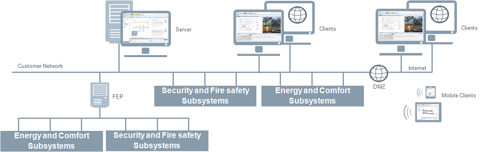
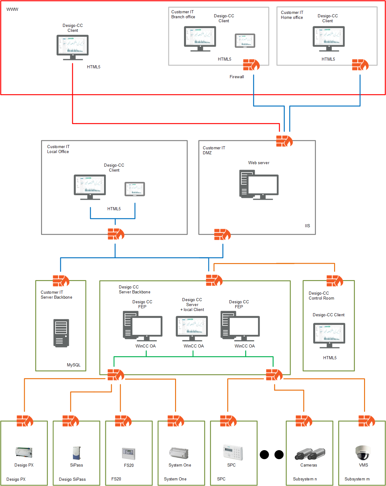

Client/Server with Remote Web Server
Intended Use Case
This is the configuration choice for the cases where multiple installed clients, connected through a dedicated or shared LAN, are required. Internet web connectivity is required for Desigo CC web-based clients and/or external applications through the Web Service Interface (WSI). The web server (IIS) is installed on a separate computer (remote web server), in a DMZ zone.

Show the Deployment Diagram of Client/Server with Remote Web Server

NOTE: Video streaming is not supported by Flex clients.
Security Certificates
For this client/server deployment, the following restrictions apply with respect to certificates:
- The root certificate validates the certificates used for communication. Therefore, it must be the same for all host certificates and it must be installed on the server and on all clients.
- The root and communication (host) certificates must be different and have different subject names.
- The communication certificates should be specific. Therefore, it is recommended to use different host certificates for client and server.
- The communication certificates are used by the Desigo CC client/FEP. Therefore, the logged-on user of the client/FEP operating system requires access to the private key of the host certificate stored in the Windows Certificate store.
- The remote web server (IIS) hosts websites and web applications.
To simplify the website configuration using SMC, it is recommended that you install the Desigo CC client (or FEP) component on this machine.
If suitable, you can actually use it as installed client or FEP station. - The web application user on this remote web server has access rights on the shared project folder on the server.
- The required certificates (SMC-created or commercial) are imported into the Windows Certificate store:
- The root certificate of the host certificate provided for CCom port security is imported into the Trusted Root Certification Authorities store.
- The communication between the web server and the Windows App clients is always secured. Hence, the website and the web application creation certificates are mandatory. Desigo CC supports using either the same or different certificates for the website and the web application.
- When a commercial certificate is used for creating a website and web application, then ensure the following:
- The commercial self-signed certificate must be imported into the Trusted Root Certification Authorities and Personal stores of the Local machine store.
- The commercial host certificate, along with its private key, must be imported into the Personal store and its root certificate must be imported into the Trusted Root Certification Authorities store of the Local machine store.